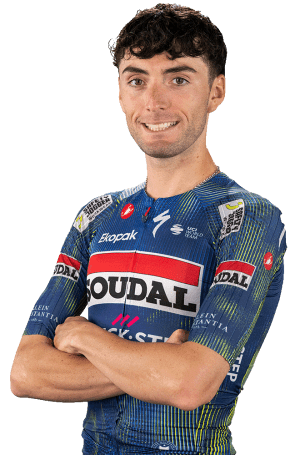

Gianmarco Garofoli
Datos personales
- Nombre completo: Gianmarco Garofoli
- Fecha de nacimiento: 6 de octubre de 2002
- País de nacimiento: Italia
- Equipo: SOUDAL QUICK-STEP
- Dorsal: 123

Datos equipos
- SOUDAL QUICK-STEP (2025 - Actual)
- Astana Qazaqstan Team (2024)
- Astana Qazaqstan Team (2023)
- Astana Qazaqstan Development Team (2022)
- Development Team DSM (2021)
Temporada 2024
| Nombre del Dato | Resultado |
|---|---|
| Equipo en 2024 | Astana Qazaqstan Team |
| Clásica de Ordizia - Ordiziako Klasikoa | 7º puesto |
| La Vuelta a España (Etapas 5 y 11) | 9º puesto |
| Itzulia Basque Country (Etapa 3) y Gooikse pijl | 15º puesto |
| Surf Coast Classic y Vuelta a España (Etapa 18) | 16º puesto |
| Itzulia Basque Country (Etapa 2) y Vuelta a España (Etapa 17) | 17º puesto |
| La Vuelta a España (Etapa 14) | 18º puesto |
Multimedia
Equipo SOUDAL QUICK-STEP en la Vuelta Ciclista a España 2026.